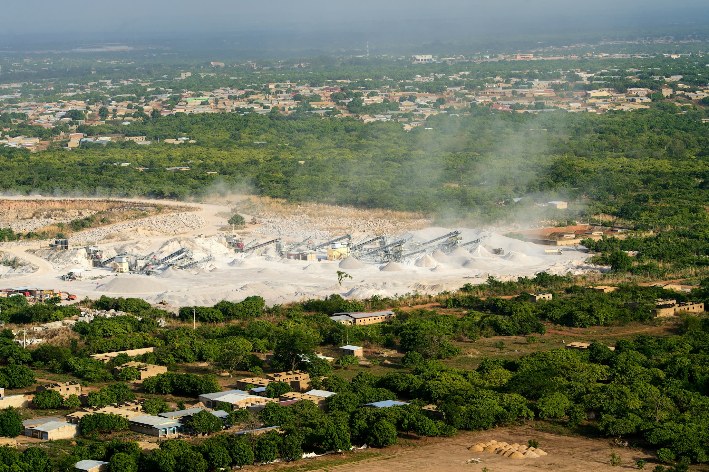
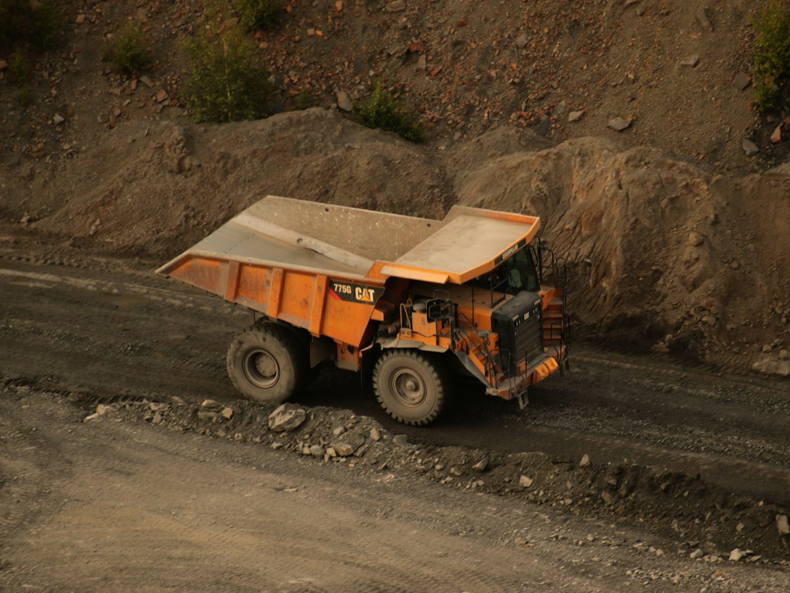
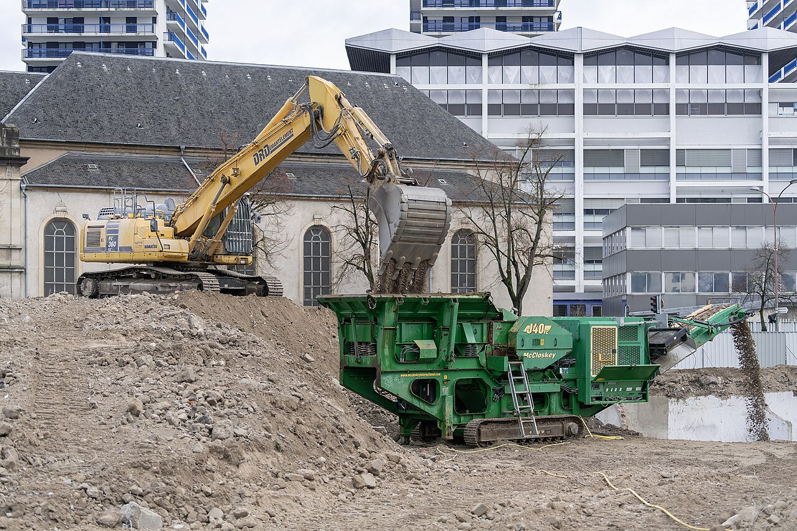
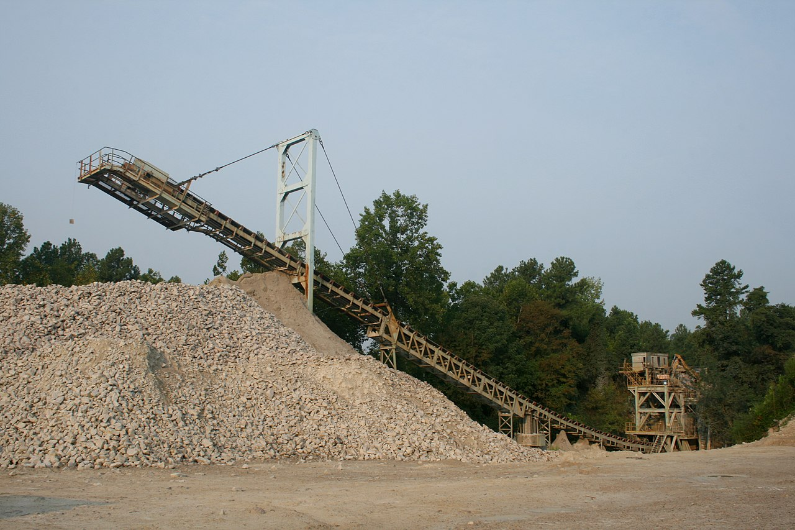
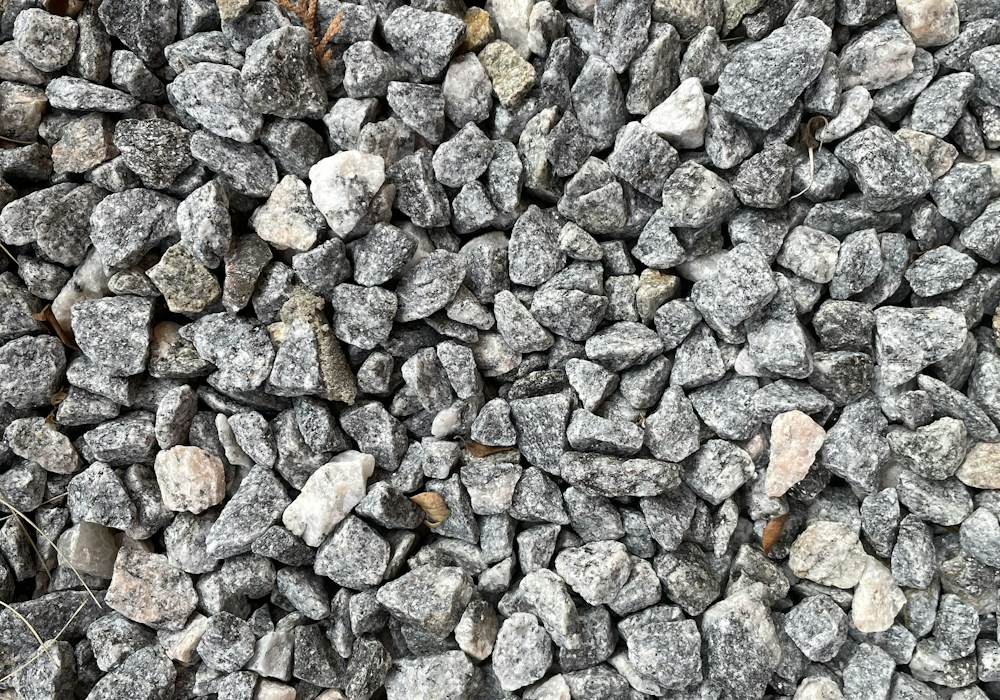
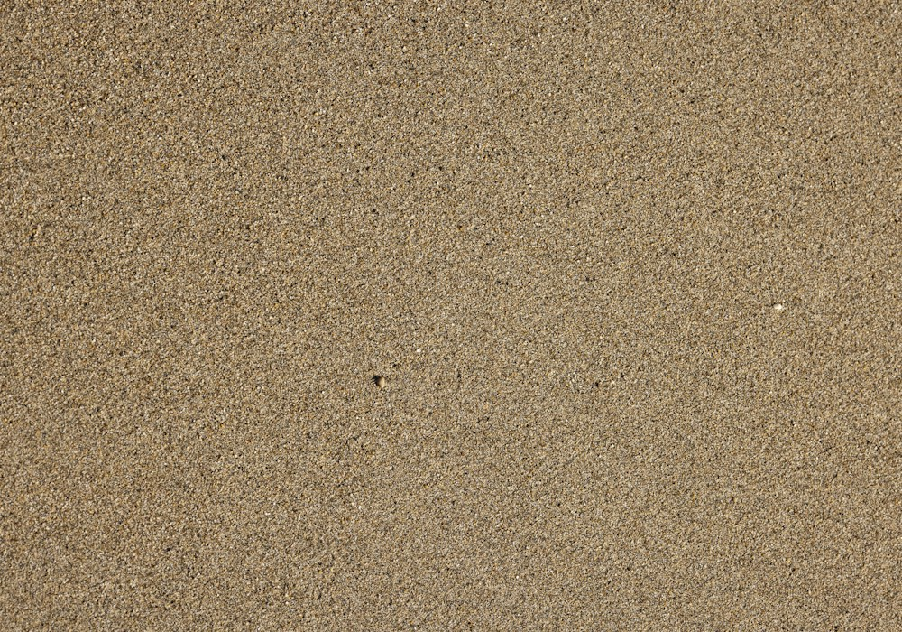
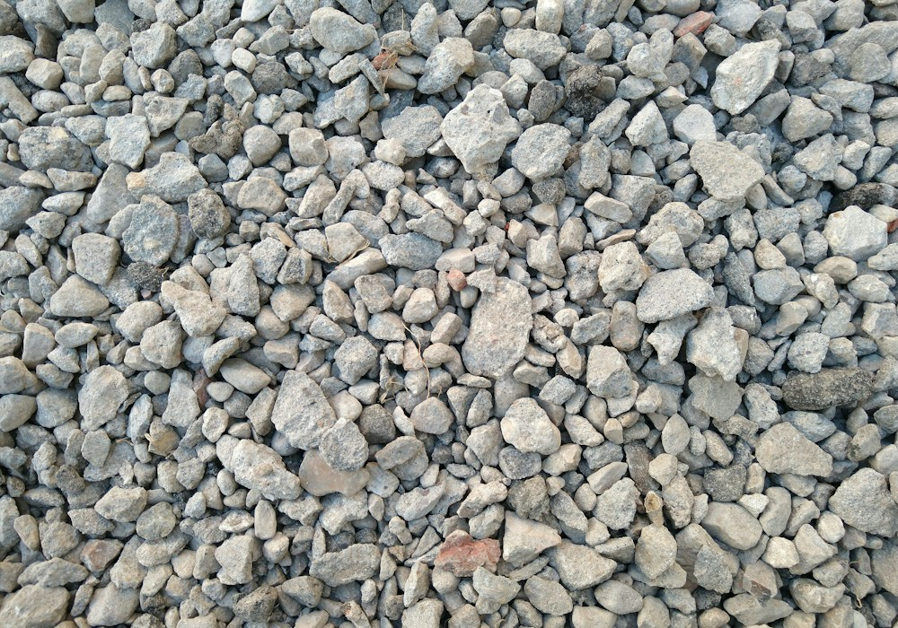

.jpg){kind=link}

Material purity
Clean, carefully selected construction materials for a solid start to your project.

30+ YEARS OF INDUSTRY EXPERIENCE
From raw rock to the roads ahead.
Discover the materials that bring your next project to life.
WATCH THE PLANT IN ACTION
A closer look at aggregate and sand processing.
Featured video by Pralcka: 350 TPH Aggregates & Sand Plant.
Watch on YouTubeESTABLISHED IN 2022
Established in 2022, Venkatramana Blue Metals is a partnership led by B. Nandakumar and E. Kamalaveni. Our quarry and crusher plant is located in Chinnakallipatti, Coimbatore, Tamil Nadu.
At VBM Quarry & Crushers, our focus is straightforward: quality construction materials, capable machinery, and relationships built on trust. Our range brings together crushed stone, manufactured sand, and road base aggregates for different construction needs.
Tell us the intended use, material specification, quantity, and destination. We’ll help you discuss the right requirements before supply is confirmed.
Explore how we can helpA CLOSER LOOK AT THE WORK
From excavation and hauling
to crushing and material movement.

Moving material across the quarry.

Reducing large feed into smaller material.

Transferring and stockpiling processed aggregate.

The starting point of material handling.
Representative quarry and equipment photographs, not photographs of VBM’s own site or fleet.
Images displayed with responsive crops. The jaw-crusher and conveyor photographs, including their display crops, remain available under CC BY-SA 4.0. No photographer or equipment manufacturer endorsement is implied.
THE VBM DIFFERENCE
Purity. Trust. Quality.
A stronger foundation for every project.
Clean, carefully selected construction materials for a solid start to your project.
Straightforward communication about materials, quantities, and supply expectations.
Ask about washed material options to suit your project’s cleanliness and grading requirements.
Materials chosen to match your construction needs, with specifications confirmed before supply.
Advanced quarry and crushing machinery to support efficient processing and consistent material preparation.
B. Nandakumar brings over 30 years of personal industry experience to discussions about materials, requirements, and your next build.
Tell us your material requirements. We’ll start with the details that matter to your build.
Discuss your requirementsMATERIALS THAT MAKE IT HAPPEN
A closer look at construction essentials.
Confirm grades and availability in your enquiry.

Angular stone for concrete mixes, foundations, and structural applications.

Processed rock fines for project-specific concrete and construction mixes.

Graded material for sub-base layers, access roads, and site preparation.
Representative stock photographs; actual supplied material may differ. Final specifications, suitability, and supply are subject to confirmation.
THE JOURNEY OF EVERY STONE
Follow a typical crushing journey.
From the quarry face to construction-ready material.
LET’S GET TO WORK
Tell us what you’re building.
Start with the material, quantity, and destination.